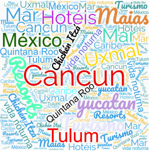

Introdução Localização Multimedia Informação
Cancun ou Cancún é uma cidade que fica na costa do estado de Quintana Roo, no México, em uma península que se tornou um dos centros turísticos mais importantes do México, tendo conseguido preservar suas belezas naturais e sua cultura ancestral, representada principalmente em cidades maias, como Tulum, Uxmal ou Chichén Itzá, fundadas no período pré-colombiano.
